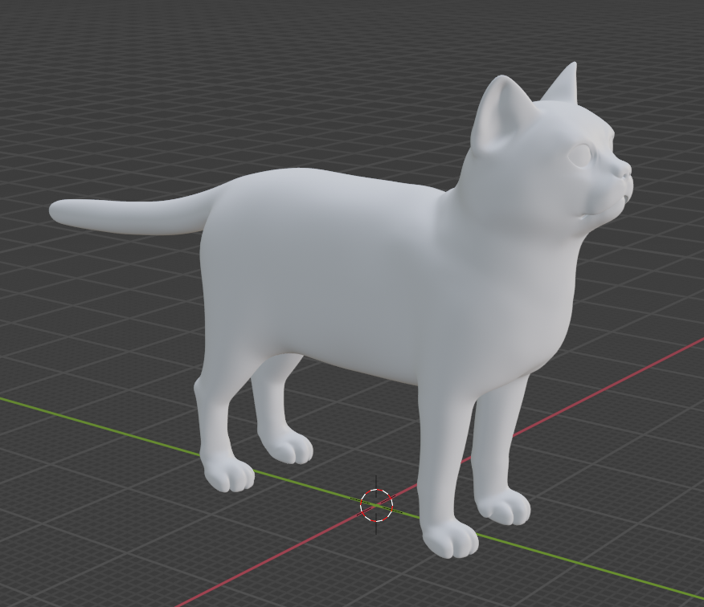

Modelling
Finding the models (2 Hours)
To model the scene mesh of my motivational image, I began by searching for some free available 3D models of streets and cats. After acquiring a city model and cat model separately from CGTrader, I proceeded to piece together and reposition these models in Blender such that they fit my anticipated scene.
The initial models of the city and cat are shown below:
City:
Cat:
Remodelling, repositioning... (7 Hours)
In terms of the street, not much was needed in order to achieve the scene I required for my final rendering. All I needed to do was find the perspective of an optimal street and remove the rest of the surrounding buildings (which were unneeded in the scene).
After building removal:
After adjusting perspective:
In terms of the two cats which would be required in the my desired scene, the remodelling was a bit more complex. As the imported cats were standing in a rigid position, some repositioning was necessary in order to achieve my desired positions (i.e. of the two cats crossing paths with their tails intertwined in the shape of a heart). I initially tried to do this using a "Bezier Curve" in Blender, to no avail. Eventually, I found that the easiest way would be to add an armature (bones) to my cats using Blender, then remodel the cat using Blender's "Pose" feature. This ended up working well, however took quite some time overall as I had to familiarize myself with how to use Blender and its features. Below shows the armature and pose modification for the cat on the right:
After adding armature:
After posing:
Lights, camera, action! (1 Hour)
Finally, to complete the modelling of my desired scene, I had to find an appropriate camera angle to display the street and the cats such that the cats were large enough to be the centre-piece of the composition (while maintaining the correct scale with respect to the buildings) and that their tails were intertwined (as this only happens at a very specifc angle). I also added from rudimentary lights (spotlight + area emitter at each lamppost, point light at the position of the camera to imitate camera flash) to light up the scene. This was all done using Blender.
Cameras and lights:

Camera view:
An example rendering of the camera view with the set up lights can be seen below, which also gives a better indication of my desired scene from my motivation. This is mainly to demonstrate my desired scene (not including lighting and texture/BSDFs, which will be implemented in later steps using my nori renderer).
Render: